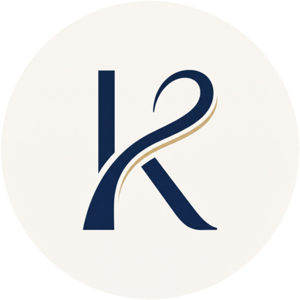

かながわコネクトオーケストラ
すべてのひとのためのオーケストラ
音楽を通して、ともに成長する
学生を中心に活動する、年齢・経験を問わないオーケストラです。
神奈川県を中心に、2026年12月頃から活動を始める予定です。
団員募集中弦楽器・木管楽器・金管楽器・打楽器
私たちについて
私たちは、音楽を通して
人と人がつながる場所をつくります。
- 人と人がつながり、
- 音と音がつながり、
- みんなの音楽になる。
学校や年齢、経験の垣根を越えて集まり、
一人ひとりの音を大切にしながら、みんなでオーケストラをつくっていきます。
初心者も、経験者も。
それぞれの経験を持ち寄って、
一緒に音楽をつくる。
はじめての方へ
初めてでも、参加できます
オーケストラの経験がなくても大丈夫です。それぞれの経験や技術に合わせて、できることから一緒に取り組みます。失敗を恐れずに挑戦できる環境を目指しています。
経験者の方へ
本気で、音楽をつくれます
第1回演奏会では、ドヴォルザークの交響曲第7番に挑戦します。指揮者や一部の人だけでなく、一人ひとりが「この曲で何を表現したいか」を考えながら、質の高い音楽を目指します。
第1回演奏会
学生が中心となって、
ドヴォルザークの交響曲第7番に挑戦します。
Main Program
Antonín Dvořák
Symphony No. 7
ドヴォルザーク：交響曲第7番 ニ短調 作品70
メインプログラムとして予定しています。オープニング・サブメイン・アンコールの曲目は、参加する皆さんの意見も聞きながら決めていきます。
開催日・会場は決定次第お知らせします。
演奏会の曲目を、
一緒に決めませんか？
第1回演奏会では、ドヴォルザーク交響曲第7番をメインプログラムとして取り上げる予定です。
オープニング曲、サブメイン曲、アンコール曲については、これから参加する皆さんの意見も聞きながら決めていきます。
- 『この曲をオーケストラで演奏してみたい！』
- 『この曲ならみんなで楽しめそう！』
そんな一曲があれば、ぜひ教えてください。
- オープニング曲目候補 募集中
- サブメイン曲目候補 募集中
- メインプログラムドヴォルザーク：交響曲第7番 予定
- アンコール1曲目候補 募集中
- アンコール2曲目候補 募集中
参加希望フォームを送っていない方も提案できます。
大切にしていること
経験を持ち寄る
初めての方も、経験を積んできた方も。互いに学び合い、一緒に成長します。
年齢・経験・所属を問わない
学校や団体の垣根を越えて、音楽をつくりたい気持ちでつながります。
失敗しても挑戦できる
うまくいかないことも成長の一部。安心して挑戦できる場所を目指します。
お互いを尊重する
年上だから、経験が長いから偉い、という考え方はしません。誰でも対等に意見を言えるオーケストラに。
みんなで音楽をつくる
誰か一人のものではなく、ここに集うみんなの音楽を。
団員募集
これから一緒に、
オーケストラをつくる仲間を募集しています。
- 学生中心
- 年齢不問
- 所属不問
- 初心者歓迎
- 経験者歓迎
募集楽器：弦楽器・木管楽器・金管楽器・打楽器
その他の楽器の方もご相談ください。
参加希望フォームは、こんな段階でも送信できます。
- 「ちょっと興味がある」
- 「まだ参加は決めていない」
- 「詳しい話を聞いてみたい」
活動について
- 活動地域
- 神奈川県を中心に活動予定（神奈川県外からの参加も歓迎）
- 活動開始
- 2026年12月頃から合奏開始予定
- 練習
- 通常は月1〜2回程度、1回約3時間を想定
具体的な日程・会場は今後決定予定です
一緒に、オーケストラをつくりませんか。
「ちょっと興味がある」「詳しい話を聞いてみたい」という段階でも、
参加希望フォームから気軽にご連絡ください。